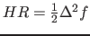

Visper implements several models that differ in the approximations done as well as in
the required input-data.
The (admittedly cryptic) names of the models in the programme stand for
HR: Huang-Rhys. This model is a bit different from the others: Here, the HR-factors
and corresponding frequencies are given and Visper computes the FC-progression for this.
FC: (normal) Franck-Condon. It uses Franck-Condon progressions based on the shift of normal modes
to calculate the spectrum.
CFC: Changed Franck-Condon. In addition to the shift of the modes, the change of frequencies is
taken into account for the calculation of intensities as well.
DR: Duschinsky-Rotation. In addition to CFC, here the coupling of modes in terms of rotations
is also taken into account for the frequency-calculation.
URDR: unrestricted Duschinsky-Rotation. This method is the more consistent version of DR since it
does not make any approximation to the changing modes
The models and their differences are explained below in more detail.
It is important to note, however, that all calculations except the URDR-spectrum are performed in one-particle approximation (OPA).
Contents
HR-factors
Since in literature, the variable scaling the FC progression is defined not consistently, we should clarify the
term HR-factor at this point.
Within Visper, the HR-factor can be computed as

where
is the shift of the modes in normal coordinates
(to be computed via
using the Cartesian shift or via
using the gradient at the initial states equilibrium geometry).
FC-based models
Assuming harmonic approximation, there are two methods for determining the shift of the normal modes,
depending on the given information.
If both electronic states are given in their equilibrium geometry, the Cartesian shift can be easily
computed and transformed to the shift of normal modes via
.
On the other hand, the shift can be infered if both states are given in the initial states
equilibrium geometry given the gradient of the final state and its frequency.
Visper by default uses the shift to determine HR-factors. If the shift is too small or the keyword
gradient is given in the list of options, it will seek informations on the gradient.
FC
Calculations with this model compute the vibronic transitions as described above.
In addition to the Poisson distribution known for FC-progressions, also transitions from vibrationally
excited initial levels are computed, changing the behaviour a bit.
CFC
This method works similar to that shown above but takes explicitly into account
that the frequencies of electronic states don't coincide and hence the overlap is different.
advantages of this method
more exact results since additional effects are taken into account
structure of the spectrum can change due to lifted degeneracies
disadvantages of this method
For larger molecules this method can take longer because the HR-factors are calculated iteratively
for many (large) systems the frequencies are expected to be very close to each other
Models in the Duschinsky picture
Taking Duschinsky-rotation into account leads to some problems by applying further
approximations such as the one-particle approximation (OPA); but the full calculation is
not feasible (or at least not wanted) for some molecules.
It turned out that the main problem is that one can not simply assign the vibrational modes
to each other since the modes in excited state are different from those in ground state
Therefore Visper has four models with differently strong approximations:
Simple
In this simple model, one simply neglects that the modes do not coincide, but also that
the order of modes may have changed and applies OPA to it.
This can lead to unreasonable results and hence this method should never be used.
URDR
Here no one-particle approximation is applied. Instead the number of normal modes taken into
account is truncated as it is done in the Franck-Condon scheme.
As in the Franck-Condon scheme, the modes taken into account explicitly are chosen by the size
of the respective shift. But for these modes, the sub-system is
calculated in full scheme.
Data-manipulations
Some of the data given (ether calculated or given via the input-files) need some manipulation to get best results. These include:
Shifting and rotating the coordinates into the same frame
projecting out rotations and vibrations
assign the modes in the respective states physically.
Particle-approximations (Franck-Condon scheme)
In the Franck-Condon picture, the intensity is determined by the Franck-Condon
factor which is, besides some factors,
.
Hence the spectrum can be calculated easily from a one-particle spectrum, if one
knows all the intensity, frequency and changing mode for all transitions in one-particle approximation.
The full FC-spectrum can be calculated exactly, if the option to nPA: m
is set with m is not lower than 3*N-6 and the threshold for the HR-factors is set to 0.